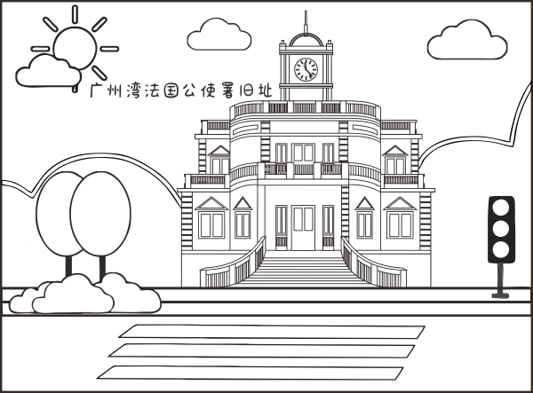

<!DOCTYPE html>
<html lang="zh-hans">
</html>
<head>
    <meta charset="utf-8"/>
    <title>涂色</title>
    <meta content="width=device-width, initial-scale=1.0, maximum-scale=1.0, user-scalable=0" name="viewport">
    <meta name="msapplication-tap-highlight" content="no">
    <script>
        !function (n) {
            var e = n.document,
                t = e.documentElement,
                i = 640,
                d = i / 100,
                o = "orientationchange" in n ? "orientationchange" : "resize",
                a = function () {
                    var n = t.clientWidth || 320;
                    n > 640 && (n = 640),
                        t.style.fontSize = n / d + "px"
                };
            e.addEventListener && (n.addEventListener(o, a, !1), e.addEventListener("DOMContentLoaded", a, !1))
        }(window);

        function orient() {
            if (window.orientation == 90 || window.orientation == -90) {
                return false;
            } else if (window.orientation == 0 || window.orientation == 180) {
                orientation = 'portrait';
                $("p").text("竖屏");
                return false;
            }
        }

        $(function () {
            orient();
        })

        $(window).on('orientationchange', function (e) {
            orient();
        });
    </script>
    <meta charset="UTF-8"/>
    <meta http-equiv="X-UA-Compatible" content="IE=edge,chrome=1">
    <meta name="viewport" content="width=device-width, initial-scale=1.0">
    <meta name="description" content=""/>
    <meta name="keywords" content=""/>
    <meta name="author" content=""/>
    <link rel="shortcut icon" type="image/x-icon" href="/favicon.ico"/>
    <link rel="stylesheet" type="text/css" href="css/button.css"/>
    <!--<link rel="stylesheet" type="text/css" href="http://www.cssmoban.com/statics/css/code-demo.css"/>-->
    <link rel="stylesheet" type="text/css" href="css/style.css"/>

    <style type="text/css">
        #P1 {
            font-size: 24px;
        }

        #balloon1 {
            position: absolute;
            z-index: 10;
            margin-bottom: 68px;
            margin-left: -50px
        }
    </style>

</head>
<body>
<!--<div class="demo-foot fix" id="balloon1">-->

<!--<a href="https://330770.weixin.drip.im/form/detail/d87b109b-21c0-4242-9859-7c9cd633f71b?special=330770"-->
<!--class="button button-red" id="balloon1"><p id="P1">乐高线下比赛报名</p></a>-->
<!--</div>-->
<div id="container">
    <section id="balloon" class="page">
        <section id="drawBalloon" class="page">
            <div onclick="myrefresh()" class="reset-btn">
                
            </div>
            <div class="draw-bg">
                <div id="draw-wrap">
                    <canvas id="canvas"></canvas>
                    
                </div>
                <a class="btn-form"
                   href="https://330770.weixin.drip.im/form/detail/d87b109b-21c0-4242-9859-7c9cd633f71b?special=330770">
                    
                </a>
            </div>
            <ul id="colors">
                <li>0050a1</li>
                <li>02a1e3</li>
                <li>abdced</li>
                <li>ef790b</li>
                <li>f8bc28</li>
                <li>96c730</li>
                <li>d3e6ba</li>
                <li>f79ab5</li>
                <li>e1147f</li>
                <li>ffff00</li>
                <li>a1488e</li>
                <li>ee0000</li>
            </ul>
        </section>
    </section>
</div>
<div id="audio_btn" class="rotate">
    <audio loop src="mp3/TroubleMaker.mp3" id="media" autoplay="" preload=""></audio>
</div>
<script src="js/jquery-2.1.4.min.js"></script>
<script src="js/utils.js"></script>
<script src="js/floodFillLinear.js"></script>
<script src="js/index.js"></script>
<script>
    function myrefresh() {
        window.location.reload();
    }

    var x = document.getElementById("media");
    $(function () {
        $("#audio_btn").click(function () {
            $(this).toggleClass("rotate"); //控制音乐图标 自转或暂停

            //控制背景音乐 播放或暂停
            if ($(this).hasClass("rotate")) {
                x.play();
            } else {
                x.pause();
            }
        })
    });
</script>
</body>
</html>